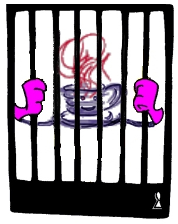

Building Integrity into Java programs

Session Leaders
Dr. John Hunt and Dr. Fred Long,
Department of Computer Science,
University of Wales, Aberystwyth,
SY23 3DB,
Email: {jjh, fwl}@aber.ac.uk
Type of Session
Tutorial (75 minutes)
Subject Matter
The subject of the tutorial is the development of high integrity object oriented programs in Java. Here programs refers to both applications and applets (after all just because a program is run as an applet does not mean that it does not need to be highly reliable).
The construction of high integrity or high reliability systems in an object oriented language, and in Java in particular, introduces some very specific issues. These issues include:
- Importance of testing inherited code in its new context.
- Implications of security within applets. Such systems require a careful analysis of security issues, the environments within which such programs will execute, as well as an understanding of the holes in Javas' "sandbox".
- The Java language itself. Issues associated with type safety, language ambiguities and common programmer bugs need to be considered.
- The environment. Java is intended to be "write once run anywhere". However, at present it is closer to "write once, and may run anywhere". This is due to differences in virtual machine implementations, internal details relating to how system provided classes are implemented and platform dependencies.
- The javac compiler. This compiler is NOT bug free. It contains a number of bugs which are primarily related to the newest addition to Javas' inner classes.
- The lack of code analysis tools such as QAC for C.
All of these have an impact on the way in which reliable object oriented Java programs should be developed and deployed. In particular they impact on:
- The reusability of code.
- The testing of your code as well as that inherited from existing classes.
- The dynamic nature through which
.class files are accessed at run time.
The need for class authentication signatures.
The application of drastic quality control measures if your application is truly mission critical or requires very high levels of reliability. For example, specifying that certain language features or classes will not be used within your applications.
The use of code quality analysis software.
The use of rapid application development to identify and trouble shoot problem areas.
The role that design patterns can play within such developments.
As part of the tutorial the session leaders will consider the impact on each of the above and how the impact can be minimized. This is an important aspect of the tutorial and will present object oriented developmental approaches and strategies.
As part of the tutorial, the attendees will be divided into groups and presented with some Java code. They will be asked to analyse it in light of the above and to comment on its integrity. The session leaders will then lead a discussion on the sample code and present the results of their own analysis.
Principal objectives
The principal objectives of this tutorial are:
- To make participants aware of the problems associated with building high integrity object oriented systems, with particular reference to Java.
- To consider the effects that these problems can have on various aspects of a project's development cycle and a program's constructions and deployment.
- To present some approaches to minimizing the influence that these problems (and their effects) can have on a program's reliability.
Who is the session for?
Intended audience
- Developers and project managers who wish to understand the issues associated with constructing high integrity object oriented systems (and in particular those considering the use of Java).
- Developers and project managers wishing to consider whether Java is safe enough for use within systems whose reliability is paramount.
Level of experience
Familiarity with at least one object oriented language (and preferably familiarity with Java).
An appreciation of the issues relating to high reliability systems (i.e. why they are important, why they are difficult to build etc.)
How will the session work?
Structure of the session
The session will be organized in the following manner:
- Problems associated with the construction of high reliability systems (10 minutes)
- Impact of these problems on the construction of systems (20 minutes)
- Impact minimization strategies and object oriented approaches (15 minutes)
- Break into groups for sample code analysis (15 minutes)
- Discussion of code analysis and "model" solution (15 minutes)
Material provided
The material provided for the session will include:
- Paper considering the problems encountered, their impact and ways of minimizing this impact.
- Sample code for analysis.
- Analysis of sample code.
Format and method of working
The format of the tutorial will involve formal lecturing, plus small group based analysis and discussion followed by a discussion with the whole group.
Session leader's experience
Dr. Hunt has been working in the field of object oriented systems (in both industry and academia) since 1986. During that time he has used a variety of object oriented languages and design techniques to construct systems as diverse as design analysis systems, MIS and AI systems. For the last year he has been involved in the analysis of Java as a language for constructing high reliability systems.
Dr. Long lectures on software engineering and formal methods. He is a
visiting scientist at the Software Engineering Institute in
Pittsburgh. Recently, he has been researching into Java's suitability for
the development of critical applications.
Conference links
- My OT97 personal details:
-
John Hunt;
- OT97 Main Web page:
-

John Hunt
23rd December 1997